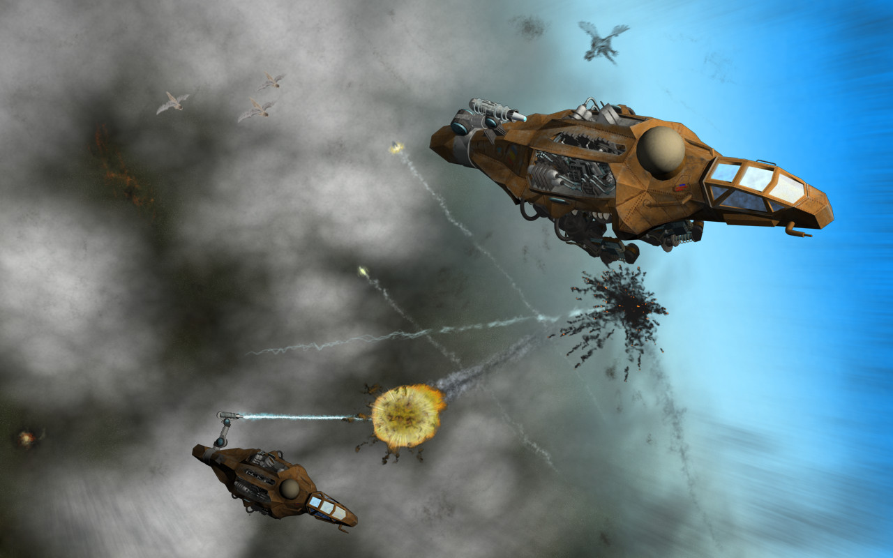

Решил выложить ещё одну старую работу. Фанарт на Филипа Пулмана. Это летательный аппарат из веленной Тёмных Начал. Описания в книжке донельзя скупы, но я старался им точно следовать и быть реалистичным.
Действие на картинке происходит во время финальной битвы в конце третьей книжки.
Today I felt like posting another one of my old works. A Philip Pullman fanart this time. This is a flying machine from His Dark Materials universe. Descriptions in the book are very scarce but I tried to follow them as close as possible while staying realistic.
Action on the picture takes place during the final battle in the end of the third book.
